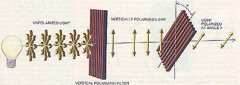

Segundo TechTudo: "Em linhas gerais, criptografia é o nome que se dá a
técnicas que transformam informação inteligível em algo que um agente externo
seja incapaz de compreender"
Segundo o Aurélio: Escrita secreta, em cifra, isto é, por meio de
abreviaturas ou sinais convencionais.
No fim, criptografia é uma forma de esconder uma informação em tráfego
de forma que só o remetente e o destinatário saibam seu cnoteúdo.
A criptografia não é uma ideia nova, é utilizada desde antigamente mas era predominante aos livros e documentos, com o advento da internet e a troca rápida e fácil de informações que ela propcia, tornou-se fundamental o uso da criptografia para proteger os dados de serem "roubados" enquanto "passeam" na grande rede.
A criptografia clássica tal como o nome indica
é a criptografia mais antiga conhecida pelo homem.
Cifra de César
O nascimento da criptografia moderna foi durante a segunda guerra mundial. Numa era tensa em que a informação sobre possíveis alvos/bases era cada vez mais crucial de manter secreta foi necessário o desenvolvimento algo capaz de fazer esse trabalho.
levantou um grande interesse por parte da marinha de guerra alemã em 1926, quando passou a ser usado como seu principal meio de comunicação e ficaram conhecidas como Funkschlüssel C
Criptografia passou a ser usada em larga escala Com isso, viu-se a necessidade de desenvolver novos tipos de criptografia.
\_(-.-)_/ O nível de segurança de uma criptografia é medido no número de bits
A criptografia hash permite que, através de uma string de qualquer tamanho, seja calculado um identificador digital de tamanho fixo, chamado de valor hash. O valor hash geralmente é formado por 16 bytes ou 20 bytes, mas pode se estender, embora não passe de 512 bytes.
É o tipo mais simples de criptografia, já que tanto o emissor quanto o receptor da
mensagem possuem a mesma chave, ou seja, a mesma chave é usada tanto na codificação
quanto na decodificação.
Para ser realizada, basta que o emissor, antes de enviar a mensagem criptografada,
envie a chave privada que será utilizada para descriptografá-la.
Diferentemente do método de Chave Simétrica, esse tipo utiliza 2 chaves, uma pública e uma privada. O sistema funciona da forma que alguém cria uma chave e envia essa chave à quem quiser mandar informações à ela, essa é a chamada chave pública. Com ela é feita a codificação da mensagem. Para decodificação será necessário utilizar uma outra chave que deve ser criada, a chave privada – que é secreta.
Criado em 1977, é um dos algoritmos de chave assimétrica mais utilizados. Consiste na multiplicação de 2 números primos muito grandes para a geração de um terceiro. Para quebrar essa cripografia, é necessário a fatoração desse número para encontrar os 2 números primos que o geraram, porém, é necessário um poder muito alto de processamento, o que inviabiliza a tarefa. A chave privada são os dois números primos, a pública é o terceiro.
Supre as desvantagens de cada tipo (Bom para comunicações intensas)
Simétrica: Necessidade de troca periódica da chave
Assimétrica: Necessidade do poder computacional
Exemplos: Protocolos TLS (Transport Layer Security) e SSL (Secure Sockets Layer)
Problema da criptografia clássica:
Sistemas exploram o fato de que certas operações matemáticas
são mais fáceis de serem computadas em um sentido do que no outro.
É baseada na incerteza natural do mundo quântico, e essa incerteza pode gerar uma chave secreta.

Usaremos 2 chaves - 1 PÚBLICA e 1 PRIVADA
Não usaremos tabela ASCII
| Tabela | ||||||||||||
|---|---|---|---|---|---|---|---|---|---|---|---|---|
| 1 | 2 | 3 | 4 | 5 | 6 | 7 | 8 | 9 | 10 | 11 | 12 | 13 |
| A | B | C | D | E | F | G | H | I | J | K | L | M |
| 14 | 15 | 16 | 17 | 18 | 19 | 20 | 21 | 22 | 23 | 24 | 25 | 26 |
| N | O | P | Q | R | S | T | U | V | W | X | Y | Z |
Vamaos assumir dois números primos quaisquer
{p = 17 e q = 41}
Achamos o n multiplicando-os
{n = p*q = 17*41=697}
n é o tamanho do conjunto que vamos usar =)
Função totinente Φ(x) = (p - 1) * (q - 1) = 16 * 40 = 640
Essa função aqui pode ser dita como o "Coração" da RSA!
Escolha um "e" tal que:
1 < e < Φ(x) e MDC [Φ(x),e] = 1
Usaremos nosso e = 13, mas ele poderia assumir outro valor
desde que obedeça a regra!
Usaremos operações modulares!
Sabendo o valor da caractere na tabela, aplicamos a fórmula:
c = me mod n
Onde "c" é a chave pública e "m" é o valor numperico da letra
Cifrando a palavra TURING temos:
T = 2013 mod 697 = 692
U = 2113 mod 697 = 497
R = 1813 mod 697 = 256
I = 913 mod 697 = 501
N = 1413 mod 697 = 396
G = 713 mod 697 = 176
TURING = 692 497 256 501 396 176
Usamos algorítimo de Euclides (aqui a coisa fica chatinha de fazer, bem chatinha mesmo)
1- Dividir e por Φ(n) → 13/640 = 13, resto 0
2- Divisor anterior pelo resto → 640/13 = 49 resto 3
3- Mesmo processo → 13/3 = 4 resto 1
No 1 paramos e usamos a fórmula(f) →
r = (1 * X) - (C * Y)
4- Aplicar no passo 1 e 2 usando f:
13 = (1*13) - (0*640)
3 = (1*640) - (48*13)
então temos que:
3 = (1*640) - 48 * [(1*13)-(0*640)]
Distribuimos a multiplicação mas n alteramos o X e o Y, e somamos os múltiplos comuns:
3 = (1*640) - (48*13)
Se MDC[Φ(n),e] = 1
logo, 1 = d * e - (r * Φ(n))
Assim, o inverso do nosso e é um d = 197
692 → 692197 mod 697 = 20
497 → 497197 mod 697 = 21
256 → 256197 mod 697 = 18
501 → 501197 mod 697 = 9
396 → 396197 mod 697 = 14
176 → 176197 mod 697 = 7
| 20 | 21 | 18 | 9 | 14 | 7 |
| T | U | R | I | N | G |